JavaScript
Intégration
Un script JavaScript peut être intégré de deux façons différentes :
- En écrivant le code directement dans la balise :
<script>/* Code JavaScript */</script>Code HTML
<!-- Exemple JavaScript --> <script>console.log("Hello JavaScript!");</script> - En tapant le code dans un fichier à part, puis l'intégrer à l'aide de la balise :
<script src="URL/fichier.js"></script>Code HTML
<script src="welcome.js"></script>Code JavaScript (dans le fichier welcome.js)
// Exemple JavaScript console.log("Hello JavaScript!");
Le Document Object Model (DOM)
1. Qu'est-ce que le DOM ?
Lorsqu'un navigateur charge une page web, il analyse le code HTML et construit automatiquement en mémoire vive une structure hiérarchique arborescente appelée le DOM (Document Object Model ou Modèle Objet de Document).
Dans cet arbre du DOM :
- La racine de l'arbre est l'objet
document(accessible directement en JavaScript viawindow.documentoudocument). - Chaque balise HTML (
<html>,<body>,<h1>,<p>,<button>, etc.) devient un nœud élément (Element node). - Le texte contenu à l'intérieur des balises forme des nœuds de texte (Text node).
- Les attributs HTML (
id,class,src,href,value) constituent des propriétés directement accessibles et modifiables de ces objets.
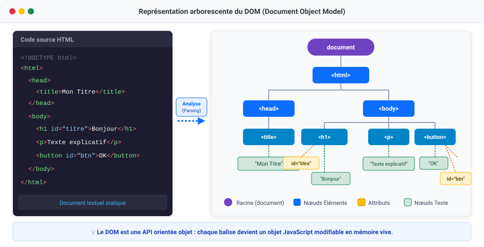
2. Comment manipuler le DOM avec JavaScript ?
La manipulation du DOM avec JavaScript repose sur une démarche méthodique en 3 étapes clés :
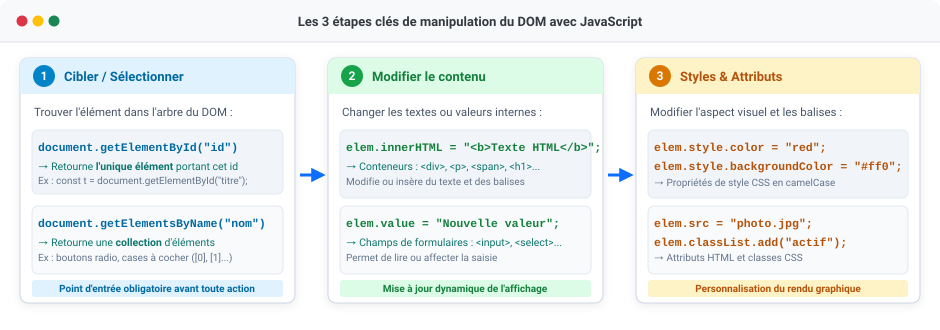
Ciblage des éléments HTML : Le ciblage des éléments se fait à l'aide de deux méthodes complémentaires :
document.getElementById("monId"): retourne l'élément unique de la page possédant cet identifiantid.document.getElementsByName("monNom"): retourne une collection (liste indexée à partir de 0) de tous les éléments partageant l'attributname="monNom". C'est la méthode de référence pour manipuler les groupes de boutons radio (<input type="radio">) ou de cases à cocher.
| Étape | Méthodes / Propriétés | Description & Exemple |
|---|---|---|
| 1. Cibler (Sélectionner) |
document.getElementById("monId")document.getElementsByName("monNom")
|
Recherche et retourne un élément unique (par son id) ou une collection d'éléments (par
leur attribut name) :const titre = document.getElementById("titre");const radios = document.getElementsByName("genre");
|
| 2. Modifier le contenu |
element.innerHTML = ...element.value = ...
|
Modifie le texte brut, injecte du balisage HTML ou met à jour la valeur d'un champ de formulaire :titre.innerHTML = "Nouveau titre";
|
| 3. Modifier styles / attributs |
element.style.propriete = ...element.classList.add(...)element.src = ...
|
Change l'aspect visuel ou les attributs d'un élément :titre.style.color = "blue";titre.style.backgroundColor = "#e0f2fe";
|
3. Exemple concret de manipulation
Voici un exemple interactif montrant comment cibler un paragraphe et un titre pour en modifier le contenu et les styles au clic sur un bouton :
Code HTML :
<div id="carte-info">
<h4 id="titre-info">Message initial</h4>
<p id="texte-info">Le contenu n'a pas encore été modifié par JavaScript.</p>
<button id="btn-action">Modifier le DOM</button>
</div>Code CSS :
#carte-info {
border: 1px solid #dee2e6;
border-radius: 8px;
padding: 15px;
background-color: #f8f9fa;
width: 320px;
}
#btn-action {
background-color: #0d6efd;
color: white;
border: none;
padding: 8px 14px;
border-radius: 4px;
cursor: pointer;
}Code JavaScript :
// 1. CIBLER les éléments du DOM par leur identifiant
const titre = document.getElementById("titre-info");
const texte = document.getElementById("texte-info");
const bouton = document.getElementById("btn-action");
// 2. RÉAGIR au clic utilisateur
bouton.onclick = function() {
// 3. MODIFIER le contenu textuel et HTML
titre.innerHTML = "DOM modifié avec succès !";
texte.innerHTML = "Le texte a été <strong>mis à jour</strong> en temps réel sans rechargement.";
// 4. MODIFIER les styles dynamiquement
titre.style.color = "#198754";
texte.style.backgroundColor = "#d1e7dd";
texte.style.color = "#0f5132";
texte.style.padding = "10px";
texte.style.borderRadius = "4px";
bouton.innerHTML = "✓ Action effectuée";
bouton.style.backgroundColor = "#198754";
};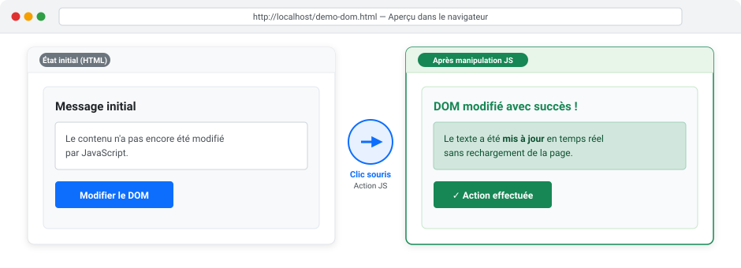
Affichage
JavaScript permet d'afficher et de restituer les résultats des traitements selon quatre méthodes principales :
| Méthode d'affichage | Instruction / Propriété | Rôle et Cas d'usage |
|---|---|---|
| 1. Console | console.log(...) |
Écrit dans la console des outils de développement (DevTools F12) pour déboguer le script et traquer les erreurs. |
| 2. Boîte d'alerte | alert(...) |
Ouvre une boîte de dialogue modale surgissante pour alerter l'utilisateur ou afficher un message important. |
| 3. Document HTML | document.write(...) / document.writeln(...) |
Écrit directement du texte ou du balisage dans le flux HTML lors du chargement de la page. |
| 4. Page web (DOM) | element.innerHTMLelement.value |
Modifie dynamiquement le contenu d'une balise HTML ou la valeur d'un champ de formulaire sans recharger la page. |
1. Affichage dans la console : console.log()
L'affichage dans la console des outils de développement (F12) permet au développeur de tester des valeurs, de suivre le déroulement du script et de traquer d'éventuelles erreurs sans perturber l'affichage destiné à l'utilisateur.
Exemple : Afficher un message de bienvenue, des variables et un calcul
<script>
let prenom = "Amine";
let classe = "3STI";
// 1. Afficher un message textuel simple
console.log("Bienvenue dans la console JavaScript !");
// 2. Afficher plusieurs valeurs et variables séparées par des virgules
console.log("Bonjour", prenom, "de la classe", classe);
// 3. Afficher le résultat direct d'une opération
console.log("Calcul : 12 + 8 =", 12 + 8);
</script>2. Affichage dans une boîte d'alerte : alert()
La fonction alert() ouvre une boîte de dialogue modale surgissante au centre du
navigateur pour transmettre une information essentielle ou un avertissement à l'utilisateur. L'exécution du
script est temporairement suspendue jusqu'à ce que l'utilisateur valide avec le bouton OK.
Exemple : Notification d'accueil et message personnalisé
<script>
let score = 18;
// Affichage d'un message direct
alert("Bienvenue sur le portail Conception Web !");
// Affichage combinant texte et variable
alert("Félicitations ! Votre score est de " + score + " / 20.");
</script>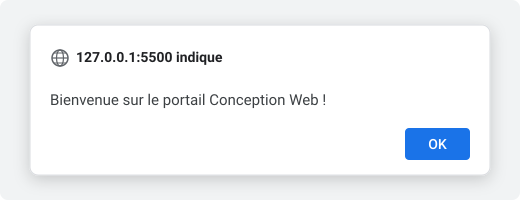
1ère alerte : message textuel direct
2ème alerte : texte combiné avec variable
3. Affichage dans le document HTML : document.write() / document.writeln()
La méthode document.writeln() écrit directement du texte et du balisage HTML dans la page lors
du chargement initial du document.
Exemple : Générer un en-tête et des informations de cours
<script>
let matiere = "Informatique";
let niveau = "3ème Sciences de l'Informatique";
// Générer un titre HTML dans la page
document.writeln("<h3>Module : " + matiere + "</h3>");
// Générer des paragraphes avec mise en valeur
document.writeln("<p>Niveau : <strong>" + niveau + "</strong></p>");
document.writeln("<p>Année scolaire : <em>2026 / 2027</em></p>");
</script>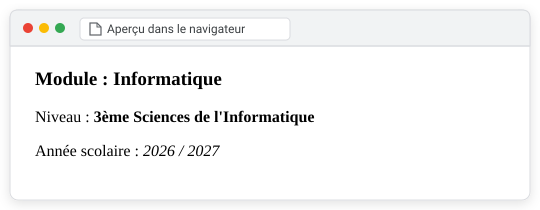
4. Affichage dans la page web (DOM et formulaires) : innerHTML et value
Une page web possède une structure arborescente formée par ses éléments appelée DOM (Document Object Model). Le langage JavaScript offre plusieurs méthodes pour accéder à ces éléments et manipuler leurs propriétés :
document.getElementById("id"): retourne une référence à un élément de la page connaissant sonid.document.getElementsByName("nom"): retourne une collection (NodeList) de tous les éléments ayant l'attributname="nom". Cette méthode est indispensable pour accéder aux groupes de boutons radio (<input type="radio">) partageant le même nom.
L'obtention d'une référence à un élément permet d'agir sur son affichage selon deux techniques complémentaires :
- Modification du contenu (
innerHTML) : pour modifier ou insérer du balisage HTML à l'intérieur d'un élément conteneur à l'aide de :elem.innerHTML = "<p>Code HTML</p>";. - Modification de la valeur d'un champ (
value) : pour lire ou affecter une valeur dans un composant de formulaire à l'aide de :elem.value = "Une nouvelle valeur";.
A. Affichage dans le contenu d'un élément avec innerHTML
La propriété innerHTML permet d'injecter dynamiquement du texte enrichi ou des balises HTML à
l'intérieur d'un conteneur (tel qu'un <div>, <p> ou
<span>) sans recharger la page.
Exemple : Mise à jour du message d'état d'un compte élève
Code HTML / JavaScript :
<!-- Balise conteneur dans la page HTML -->
<div id="zone-statut">Chargement en cours...</div>
<script>
// 1. Récupérer l'élément cible par son id
const statut = document.getElementById("zone-statut");
// 2. Injecter du balisage HTML dans son contenu
statut.innerHTML = "<p class='succes'>Compte actif — Connecté</p>";
</script>Code CSS :
#zone-statut {
margin: 15px auto;
text-align: center;
}
.succes {
display: inline-block;
background-color: #d4edda;
color: #155724;
border: 1px solid #c3e6cb;
padding: 8px 16px;
border-radius: 6px;
font-weight: bold;
}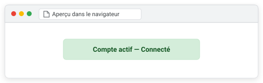
B. Affichage dans un composant de formulaire avec value
La propriété value permet d'accéder au texte saisi par l'utilisateur ou d'affecter un nouveau
résultat dans un champ de formulaire (<input>, <textarea>,
<select>).
Exemple : Calculer un prix TTC à partir d'un prix HT saisi
Code HTML / JavaScript :
<form action="#">
<div>
<label for="prix_ht">Prix Hors Taxe (DT) :</label>
<input type="number" id="prix_ht" value="100">
</div>
<div>
<label for="prix_ttc">Prix TTC (TVA 19%) :</label>
<input type="text" id="prix_ttc" readonly>
</div>
</form>
<script>
// 1. Récupérer les références des deux champs
const champHT = document.getElementById("prix_ht");
const champTTC = document.getElementById("prix_ttc");
// 2. Lire la valeur du prix HT (convertie en nombre)
let ht = Number(champHT.value);
// 3. Calculer et écrire le résultat dans le champ TTC
let ttc = ht * 1.19;
champTTC.value = ttc.toFixed(2) + " DT";
</script>Code CSS :
form {
width: 320px;
margin: 20px auto;
padding: 15px;
background-color: #f8f9fa;
border: 1px solid #ced4da;
border-radius: 6px;
}
label {
display: block;
margin-bottom: 5px;
font-size: 13px;
color: #495057;
}
input {
width: 100%;
padding: 6px 10px;
margin-bottom: 12px;
border: 1px solid #ced4da;
border-radius: 4px;
box-sizing: border-box;
}
#prix_ttc {
background-color: #e9ecef;
color: #0d6efd;
font-weight: bold;
}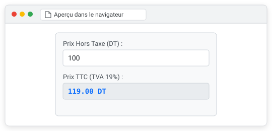
Variables et constantes
On peut déclarer des variables en JavaScript en utilisant les mots clés var et let.
Les variables peuvent être initialisées lors de leurs déclaration. Une variable non initialisée contient la
valeur : undefined.
Le nom d'une variable doit commencer par une lettre ou par le caractère de soulignement (_). Les caractères suivants peuvent être des lettres, des chiffres et/ou le caractère de soulignement.
Contrairement à une variable dont la valeur peut changer au cours de l'exécution du script, la valeur d'une constante reste inchangée après sa déclaration.
Remarque 1 : Il est vivement conseillé d'utiliser le mot clé
let. Le mot clé var est à éviter.
Remarque 2 : JavaScript est sensible à la casse.
Exemple 1 : Déclaration d'une variable
// Déclaration de variables sans initialisation
var x;
let y;
// Déclaration de variables avec initialisation
var nom = "Ahmed";
let age = 16;
console.log(x, y);
console.log(nom, age);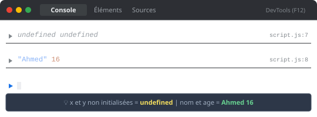
Exemple 2 : Sensibilité à la casse
let x = 6;
console.log(X); // Affiche une erreur : X is not defined
console.log(x);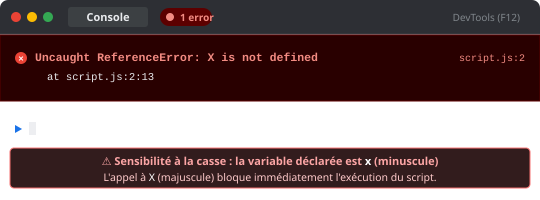
Exemple 3 : Constantes vs Variables
// variable
let x = 4;
x = x + 2;
x = x * 5;
console.log(x);
// constante
const y = 5;
y = y + 2;
console.log(y);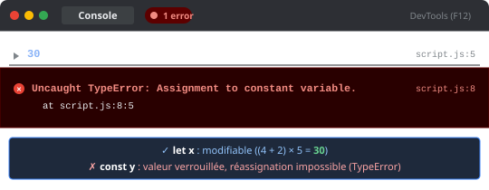
Types
JavaScript supporte six classes de variables prédéfinis :
number: Pour les nombres entiers et réels,string: Pour les chaînes de caractères,boolean: Pour les expressions qui renvoienttrueoufalse,object: Pour les tableaux et les objets définis par l'utilisateur,function: Pour les fonctions,undefined: Pour les variables déclarées sans initialisation.
Le mot clé typeof v retourne le type de v. v est soit une constante ou une variable.
Exemple : Détermination du type avec typeof
console.log(typeof 5.6); // 'number'
console.log(typeof 17);
console.log(typeof Number.NaN);
console.log(typeof "ayoub"); // 'string'
console.log(typeof (5 > 6)); // 'boolean'
console.log(typeof [1, 2, 3]); // 'object'
console.log(typeof null);
let x;
console.log(typeof x); // 'undefined'
console.log(typeof Math.abs); // 'function'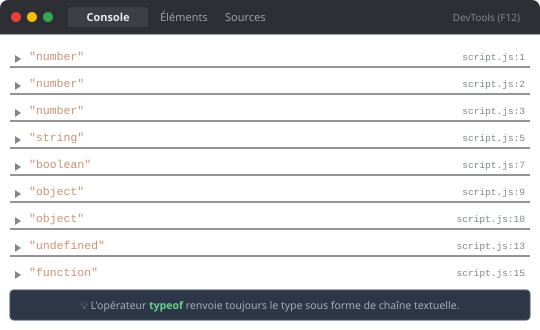
Opérateurs
Les opérateurs sont classés en catégories :
Les opérateurs de calcul
| Addition | Soustration | Multiplication | Division | Modulo |
|---|---|---|---|---|
| c = a + b; | d = a - b; | e = a * b; | f = a / b; | g = a % b; |
Exemple 1
let a = 15;
let b = 6;
let c = a + b; console.log(c); // 21
let d = a - b; console.log(d); // 9
let e = a * b; console.log(e); // 90
let f = a / b; console.log(f); // 2.5
let g = a % b; console.log(g); // 3Les opérateurs assosiatifs
Il s'agit d'une forme plus courte des opérateurs arithmétiques.
| Addition | Soustration | Multiplication | Division | Modulo |
|---|---|---|---|---|
| a += b; Equivalente à : a = a + b; |
a -= b; Equivalente à : a = a - b; |
a *= b; Equivalente à : a = a * b; |
a /= b; Equivalente à : a = a / b; |
a %= b; Equivalente à : a = a % b; |
Exemple 2
let a = 15;
let b = 6;
a += b; console.log(a); // 15 + 6 = 21
a -= b; console.log(a); // 21 - 6 = 15
a *= b; console.log(a); // 15 * 6 = 90
a /= b; console.log(a); // 80 / 6 = 15
a %= b; console.log(a); // 15 % 6 = 3Les opérateurs d'incrémention
Il s'agit d'une forme plus courte des opérateurs arithmétiques.
| Pré-incrémentation | Post-incrémentation | Pré-décrémentation | Post-décrémentation |
|---|---|---|---|
| ++a; Equivalente à : a = a + 1; |
a++; Equivalente à : a = a + 1; |
--a; Equivalente à : a = a - 1; |
a--; Equivalente à : a = a - 1; |
Exemple 3
let a = 8;
// Pré-incrémentation
console.log(++a); // 9
console.log(a); // 9
// Post-incrémentation
console.log(a++); // 9
console.log(a); // 10
// Pré-décrémentation
console.log(--a); // 9
console.log(a); // 9
// Post-décrémentation
console.log(a--); // 9
console.log(a); // 8Les opérateurs de comparaison
| Supérieur | Supérieur ou égal | Inférieur | Inférieur ou égal | Même valeur | Valeur différente | Même type et même valeur | Type ou valeur différents |
|---|---|---|---|---|---|---|---|
| a > b | a >= b | a < b | a < b | a == b | a != b | a === b | a !== b |
Exemple 4
let a = 8;
let b = "8";
let c = 9;
// Supérieur
console.log(c, ">", a, "=>", c > a); // true
console.log(b, ">", a, "=>", b > a); // false
// Supérieur ou égal
console.log(c, ">=", a, "=>", c >= a); // true
console.log(a, ">=", b, "=>", a >= b); // true
// Inférieur
console.log(c, "<", a, "=>", c < a); // false
console.log(b, "<", a, "=>", b < a); // false
// Inférieur ou égal
console.log(c, "<=", a, "=>", c <= a); // false
console.log(a, "<=", b, "=>", a <= b); // true
// Même valeur
console.log(c, "==", a, "=>", c == a); // false
console.log(b, "==", a, "=>", b == a); // true
// Valeur différente
console.log(c, "!=", a, "=>", c != a); // true
console.log(b, "!=", a, "=>", b != a); // false
// Même type et même valeur
console.log(c, "===", a, "=>", c === a); // false
console.log(b, "===", a, "=>", b === a); // false
// Type ou valeur différents
console.log(c, "!==", a, "=>", c !== a); // true
console.log(b, "!==", a, "=>", b !== a); // trueLes opérateurs logiques
| Et logique | Ou logique | Non logique |
|---|---|---|
| a && b | a || b | !a |
Exemple 5
let a = 8;
let b = 6;
let c = 4;
console.log(a, ">", b, "&&", b, ">", c, (a > b && b > c)) // true
console.log(a, "<", b, "||", b, ">", c, (a < b || b > c)) // true
console.log("!(", a, ">", b, ")", !(a > b)) // falseEntrées
Il est possible de récupérer les données de l'utilisateur en utilisant diverses méthodes :
- Depuis un formulaire en utilisant la propriété :
elem.valued'un champ. - Depuis une boîte d'invite (prompt).
- Depuis une boîte de confirmation.
Exemple 1 : Récupérer une donnée depuis un champ de formulaire
<input type="text" id="np" name="np" value="Salah">
<script>
const np = document.getElementById("np");
document.writeln("Bonjour ", np.value);
</script>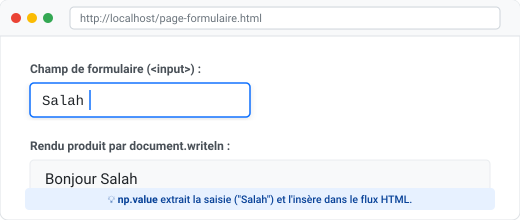
Exemple 2 : Récupérer une donnée à partir d'une boîte d'invite
<div id="operation"></div>
<script>
const op = document.getElementById("operation");
let a = prompt("Donner a ?", "5");
let b = prompt("Donner b ?", "7");
let s = a + b;
op.innerHTML = a + " + " + b + " = " + s;
</script>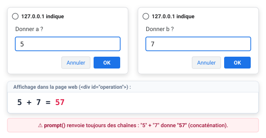
Exemple 3 : Récupérer une confirmation
<script>
const reponse = confirm("Voulez-vous supprimer cet élément ?");
if (reponse) {
alert("L'élément a été supprimé !");
} else {
alert("Vous avez annulé l'opération !");
}
</script>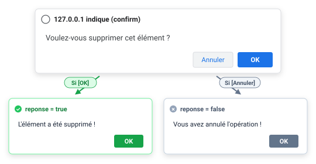
Conditions
JavaScript offre une variété de structures conditionnelles :
- L'instruction
if - L'instruction
switch - L'opérateur ternaire
(cond) ? val1 : val2
L'instruction if
Forme générale
if (condition) {
// traitement
} else {
// autre traitement
}Exemple : Comparaison de deux nombres avec if ... else if ... else
<script>
let a = prompt("Donner a ? ", "0");
let b = prompt("Donner b ? ", "0");
let res = "";
a = parseInt(a);
b = parseInt(b);
if (a > b) {
res = a + " > " + b;
} else if (a < b) {
res = a + " < " + b;
} else {
res = a + " = " + b;
}
alert(res);
</script>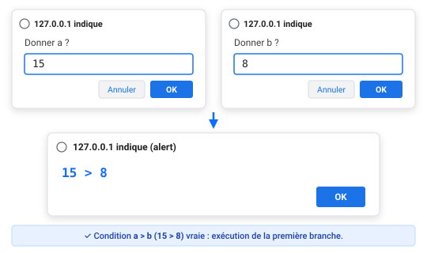
L'instruction switch
Forme générale
switch (variable) {
case valeur1:
// traitement
break;
case valeur2:
// autre traitement
break;
default:
// traitement par défaut
}Exemple : Aiguillage avec switch
let j2 = Math.trunc(Math.random() * 3), cj2;
let j1, cj1;
let g, res;
switch (j2) {
case 0: cj2 = "Pierre"; break;
case 1: cj2 = "Feuille"; break;
case 2: cj2 = "Ciseaux"; break;
default: cj2 = "Aucun";
}
j1 = j2;
cj1 = cj2;
res = "Partie nulle";
alert(cj1 + " contre " + cj2 + " => " + res);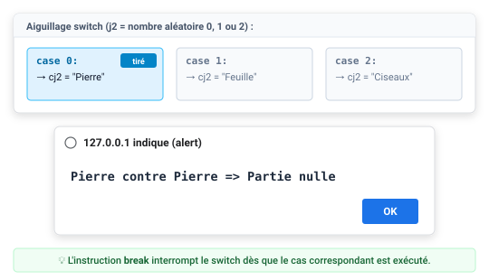
L'opérateur ternaire
Forme générale
(condition) ? valeur1 : valeur2Exemple : Évaluation conditionnelle avec l'opérateur ternaire
let v1 = Math.trunc(Math.random() * 2);
let v2 = Math.trunc(Math.random() * 2);
let res = (v1 == v2) ? "Egaux" : "Différents";
alert(v1 + " == " + v2 + " ? " + res);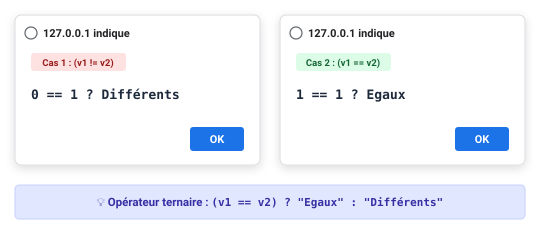
Boucles
On utilise les structures itératives lorsqu'on veut répéter un traitement plusieurs fois. JavaScript met à notre disposition les structures suivantes :
for: lorsque le nombre de répétitions est connu à l'avance.whileetdo ... while: lorsque le nombre de répétitions dépend d'une condition.
Boucle for
Forme générale
for (initialisation; condition; increment) {
// traitement
}Exemple : Afficher les nombres pairs entre 0 et 15
<p><b>Nombres pairs :</b>
<script>
for (let i = 0; i < 16; i++) {
if (i % 2 == 0) {
document.writeln(i);
}
}
</script>
</p>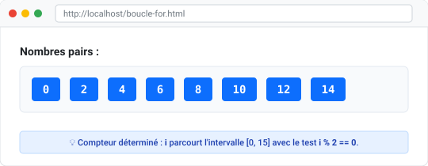
Boucle while
Forme générale
while (condition) {
// traitement
}Exemple : Calcul du PGCD par l'algorithme d'Euclide
PGCD(a, b) = PGCD(b, a mod b) si b ≠ 0 — PGCD(a, b) = a si b = 0
<p><b>Calcul du PGCD : </b>
<script>
let a = parseInt(prompt("Donner a ? "));
let b = parseInt(prompt("Donner b ? "));
/* Algorithme d'Euclide */
let a1 = a, b1 = b;
while (b1 != 0) {
let r = a1 % b1;
a1 = b1;
b1 = r;
}
document.writeln("PGCD(", a, ", ", b, ") = ", a1);
</script>
</p>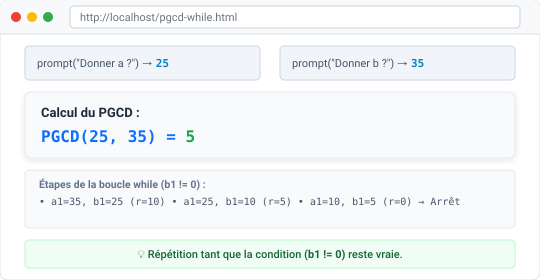
Boucle do ... while
Cette boucle est semblable à sa sœur aînée while. La seule différence est que le
traitement est exécuté au moins une fois avant que la condition ne soit évaluée.
Forme générale
do {
// traitement
} while (condition);Exemple : Tirage aléatoire jusqu'à trouver un chiffre d'unités donné
<script>
let a = Math.trunc(Math.random() * 10);
let b, u;
document.writeln("<p>Cherchons un nombre ayant un chiffre d'unités = ", a, "</p>");
do {
b = Math.trunc(Math.random() * 90) + 10;
u = b % 10;
if (u == a) {
document.writeln(b, " Accepté");
} else {
document.writeln(b, " Rejeté");
}
document.writeln("<br>");
} while (u != a);
</script>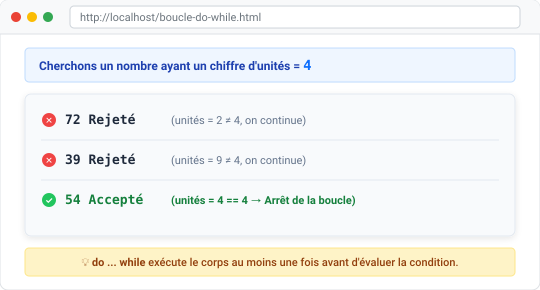
Fonctions
L'utilisation des fonctions permet de réduire la complexité d'un problème en le décomposant en des sous-problèmes moins compliqués.
Les fonctions en JavaScript sont des citoyens de première classe. Elle peut être déclarée comme une variable et passée en tant que paramètre à une autre fonction. Une fonction peut-être déclarée de plusieurs façons :
- À l'aide du mot clé :
function. - Comme une variable ou constante à l'aide de
const,letouvar. - Comme une fonction anonyme.
Déclaration
Forme générale
/* fonction ordinaire */
function nom_fonction(par1, par2, ..., parN) {
// traitement
/* La fonction peut retourner, ou non, un résultat à son appelant */
[return résultat;]
}Exemple
L'exemple suivant présente plusieurs déclarations et invocations de fonctions :
let a = 5, b = 10;
/* Déclaration d'une fonction : somme */
function somme(a, b) {
return a + b;
}
document.writeln("<p>", a, "+", b, "=", somme(a, b), "</p>");
/* Déclaration d'une fonction : produit */
function produit(a, b) {
return a * b;
}
document.writeln("<p>", a, "*", b, "=", produit(a, b), "</p>");
/* Déclaration d'une fonction : alea */
function alea(a, b) {
return Math.trunc(Math.random() * (b - a)) + a;
}
document.writeln("<p>alea(", a, ", ", b, ") = ", alea(a, b), "</p>");
// Le premier paramètre de calc est une fonction
function calc(fn, a, b) {
return fn(a, b);
}
/* Appel d'une fonction : Méthode 4 */
const res = calc(produit, a, b);
document.writeln("<p>", a, "*", b, "=", res, "</p>");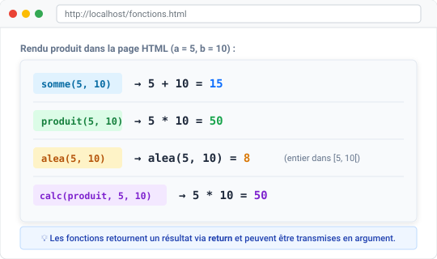
Chaînes
Une chaîne de caractères est une séquence de caractères indexée de 0 à length - 1.
JavaScript fournit de nombreuses méthodes pour manipuler les chaînes :
| Propriété / Méthode | Description | Exemple |
|---|---|---|
ch.length |
Retourne la longueur (nombre de caractères) de la chaîne. | "Bonjour".length → 7 |
ch[p] ou ch.charAt(p) |
Retourne le caractère situé à la position (indice) p. |
"Web"[1] ou "Web".charAt(1) →
"e"
|
ch.charCodeAt(p) |
Retourne le code ASCII (Unicode) du caractère à la position p. |
"A".charCodeAt(0) → 65 |
String.fromCharCode(code) |
Construit et retourne un caractère à partir de son code ASCII. | String.fromCharCode(65) → "A" |
ch.indexOf(ch1, p) |
Retourne la première position de ch1 dans ch (à partir de p,
par défaut 0). Retourne -1 si non trouvée. |
"banane".indexOf("an") → 1 |
ch.lastIndexOf(ch1, p) |
Retourne la dernière position de ch1 dans ch (recherche de droite à gauche).
Retourne -1 si non trouvée. |
"banane".lastIndexOf("an") → 3 |
ch.substring(d, f) |
Extrait une sous-chaîne entre l'indice d (inclus) et f (exclu). |
"Informatique".substring(0, 4) → "Info" |
ch.replace(ch1, ch2) |
Remplace la première occurrence de ch1 par ch2. |
"chat noir".replace("noir", "blanc") →
"chat blanc"
|
ch.toUpperCase() |
Convertit toute la chaîne en majuscules. | "bac".toUpperCase() → "BAC" |
ch.toLowerCase() |
Convertit toute la chaîne en minuscules. | "BAC".toLowerCase() → "bac" |
ch.trim() |
Supprime les espaces au début et à la fin de la chaîne. | " test ".trim() → "test" |
Nombres
En JavaScript, les valeurs saisies par l'utilisateur (via un champ de formulaire ou une boîte de dialogue)
sont initialement récupérées sous forme de chaînes de caractères (string). JavaScript propose des
fonctions indispensables pour vérifier, convertir et
formater les nombres :
| Fonction / Méthode | Description | Exemple et Résultat |
|---|---|---|
isNaN(ch) |
is Not a Number : Vérifie si une valeur ou une chaîne n'est pas un nombre
valide. Retourne true si la valeur n'est pas numérique, et false si c'est un nombre
valide.
|
isNaN("15.5") → falseisNaN("12a") → trueisNaN("STI") → true
|
Number(ch) |
Convertit globalement une chaîne ch en valeur numérique (entière ou décimale).Retourne NaN si la chaîne contient des caractères non numériques.
|
Number("19.75") → 19.75Number("25px") → NaNNumber("") → 0
|
parseInt(ch, b) |
Extrait et convertit le début d'une chaîne ch en nombre entier dans la
base b (base 10 décimale par défaut si b est omis).La lecture s'arrête dès qu'un caractère non valide pour la base est rencontré. |
parseInt("42.8") → 42parseInt("150px") → 150parseInt("1011", 2) → 11parseInt("FF", 16) → 255
|
parseFloat(ch) |
Extrait et convertit le début d'une chaîne ch en nombre réel décimal (à
virgule flottante).S'arrête dès le premier caractère non convertible. |
parseFloat("14.75") → 14.75parseFloat("14.75 DT") → 14.75parseFloat("bac") → NaN
|
N.toString(b) |
Méthode appliquée sur un nombre N pour le convertir en chaîne de
caractères.Le paramètre optionnel b permet de choisir la base de numération (ex. 2 pour binaire, 16
pour hexadécimal).
|
(125).toString() → "125"(10).toString(2) → "1010"(255).toString(16) → "ff"
|
Exemple d'application : Contrôle de saisie et conversion numérique
Dans un formulaire, la valeur retournée par un champ <input> est toujours de type texte.
Pour calculer la moyenne de deux notes en toute sécurité :
let note1 = "14.5"; // Récupéré via champ1.value
let note2 = "abc"; // Saisie erronée d'un utilisateur
// 1. Contrôle de validité avec isNaN()
if (isNaN(note1) || isNaN(note2)) {
console.log("Erreur : Veuillez saisir des notes numériques valides !");
} else {
// 2. Conversion explicite avec parseFloat() ou Number()
let moyenne = (parseFloat(note1) + parseFloat(note2)) / 2;
console.log("Moyenne =", moyenne);
}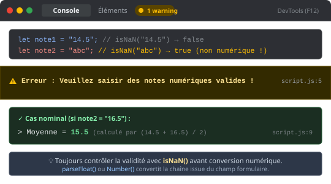
Math
L'objet prédéfini Math rassemble des constantes et des fonctions mathématiques courantes :
| Méthode | Description | Exemple |
|---|---|---|
Math.abs(N) |
Retourne la valeur absolue de N. |
Math.abs(-12) → 12 |
Math.round(N) |
Retourne l'arrondi arithmétique de N à l'entier le plus proche (≥ 0.5 vers le haut).
|
Math.round(4.5) → 5Math.round(4.4) →
4
|
Math.trunc(N) |
Retourne la partie entière de N en éliminant la fraction décimale (troncature). |
Math.trunc(4.9) → 4Math.trunc(-4.9) →
-4
|
Math.trunc(N) |
Retourne le plus grand entier inférieur ou égal à N (arrondi à l'inférieur). |
Math.trunc(4.9) → 4Math.trunc(-4.1) →
-5
|
Math.random() |
Génère un nombre réel pseudo-aléatoire dans l'intervalle semi-ouvert [0, 1[. |
Math.trunc(Math.random() * 10) + 1 → Entier entre 1 et 10 |
Dates
En JavaScript, la gestion du temps, des dates et des heures s'effectue à l'aide de l'objet standard
Date. Il permet d'obtenir l'instant courant du système ou de manipuler une date saisie par un
utilisateur :
1. Instanciation d'un objet Date
| Syntaxe | Description | Exemple |
|---|---|---|
new Date() |
Crée un objet représentant la date et l'heure système actuelles (au moment précis de l'exécution). | let mnt = new Date(); |
new Date(ch) |
Crée un objet Date à partir d'une chaîne ch au format standard ISO
("YYYY-MM-DD").C'est la valeur exacte retournée par un champ HTML5 <input type="date">.
|
let d = new Date("2008-04-25"); |
2. Méthodes d'extraction et de formatage
| Méthode | Description | Valeurs de retour et Exemple |
|---|---|---|
d.getDate() |
Retourne le jour du mois. | Entier entre 1 et 31.d.getDate() → 25
|
d.getMonth() |
Retourne le numéro du mois. Attention : Les mois sont numérotés de 0 à 11 (0 = Janvier, 1 = Février, ..., 11 = Décembre). Pour afficher le mois réel, on ajoute 1 : d.getMonth() + 1.
|
Entier entre 0 et 11.d.getMonth() → 3
(Avril)d.getMonth() + 1 → 4 |
d.getFullYear() |
Retourne l'année complète sur 4 chiffres. | Entier à 4 chiffres.d.getFullYear() → 2008 |
d.toString() |
Convertit l'objet Date en une chaîne descriptive lisible incluant jour, date, heure et fuseau horaire. | d.toString() →"Fri Apr 25 2008 01:00:00 GMT+0100..." |
3. Exemple d'application : Calcul de l'âge d'un utilisateur
Soit un formulaire permettant à un utilisateur de saisir sa date de naissance. Le script calcule automatiquement son âge en années à partir de l'année actuelle :
<form action="#">
<label for="dn">Date de naissance :</label>
<input type="date" id="dn" value="2007-06-15">
<button type="button" onclick="calculerAge()">Calculer l'âge</button>
<p id="res_age"></p>
</form>
<script>
function calculerAge() {
const champDate = document.getElementById("dn");
const affichage = document.getElementById("res_age");
// 1. Instancier la date de naissance saisie
const dateNais = new Date(champDate.value);
// 2. Instancier la date courante du système
const aujourdhui = new Date();
// 3. Extraire les années et composantes
const anneeNais = dateNais.getFullYear();
const anneeActuelle = aujourdhui.getFullYear();
// 4. Calcul de l'âge
let age = anneeActuelle - anneeNais;
// Ajuster si l'anniversaire n'est pas encore passé cette année
const diffMois = aujourdhui.getMonth() - dateNais.getMonth();
if (diffMois < 0 || (diffMois === 0 && aujourdhui.getDate() < dateNais.getDate())) {
age--;
}
affichage.innerHTML = "Date de naissance : <strong>" + dateNais.getDate() + "/" + (dateNais.getMonth() + 1) + "/" + anneeNais + "</strong> — Âge : <strong>" + age + " ans</strong>";
}
</script>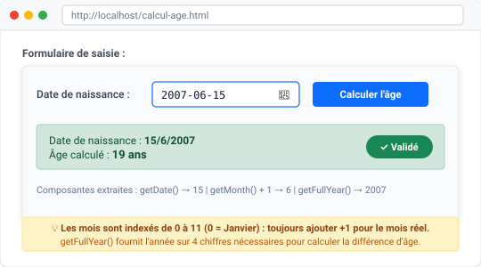